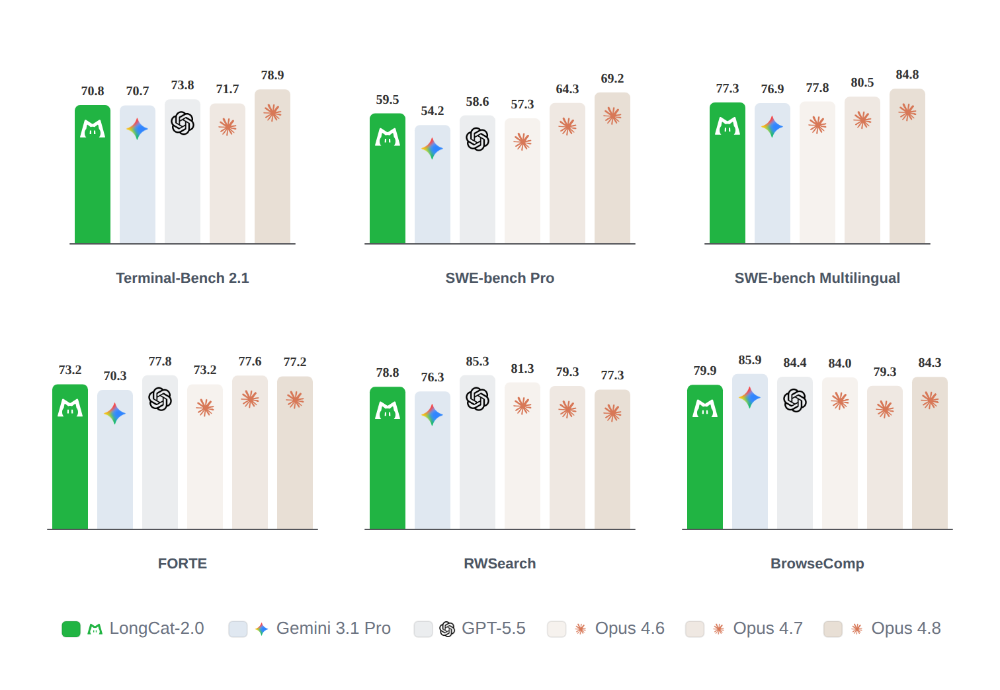

00全景与读法
本看板曾用"国产芯片做推理是真的，做训练更难且少有公开实证"概括行业状态。LongCat-2.0 让这句话需要加上一个重要例外：前沿规模（1.6T / 约 48B 激活）、完整链路（官方称 full training run 与 large-scale deployment 均构建在国产 AI ASIC 超节点上）、集群规模（预训练超过 5 万片国产算力芯片，MOPD 运行在数万卡集群）、系统细节（公开到并行维度、确定性算子、显存管理、长上下文训练、推理解耦和故障恢复）。但它仍不是可复现训练报告：训练代码、完整数据配方、MFU、故障率与第三方复现均未公开。此前媒体口径中的 HCCL、昇腾 910C、35T+ 总训练 token 和"后训练即 RL"均不再作为官方确认事实。
每一节固定三段：朴素基线（左栏，灰：不看发布页时的直觉做法）/ LongCat 的做法（右栏，橙）/ 差在哪（下方色块：差异、官方是否给了理由或数字、对 RL-on-NPU 的含义）。数字按来源标注：自报 官方发布页口径（本篇全部性能与系统增益均属此类，self-reported / provisional）、第三方 独立来源（本篇没有）、推断 本站分析。
贯穿全文的一条线索：存在性证据与复现路径是两回事。官方给出了高具体度的存在性证据（国产芯片能支撑前沿规模完整训练），但尚未给出公共复现路径（训练代码、芯片身份、RL 配方）。LongCat-2.0 与本站的真实 910B 曲线应分开理解：前者是大规模国产 AI ASIC 训练 / 部署的官方系统案例，后者是明确标注 Ascend 910B 的公开硬件遥测证据，两者互补，不能相互替代。
01重要性所在：一个重要例外
LongCat-2.0 的意义在于四点同时成立： 前沿规模——1.6T 总参数、约 48B 激活的 MoE； 完整链路——官方称 full training run 与 large-scale deployment 均构建在国产 AI ASIC 超节点上； 集群规模——预训练使用超过 5 万片国产算力芯片，后训练的 MOPD 能力融合运行在数万卡集群； 系统细节——公开到并行维度、确定性算子、显存管理、长上下文训练、推理解耦和故障恢复，而非仅提供一张发布会数字图。 这仍不是一份可复现训练报告：训练代码、完整数据配方、MFU、故障率与第三方复现均未公开。更准确的结论是：官方给出了高具体度的存在性证据，但尚未给出公共复现路径。

这张图怎么读
主链五个节点全部为官方口径，但证据边界的虚线只指向一个节点——后训练。这不是因为预训练与部署的证据更强（它们同样是自报、无第三方复现），而是因为后训练是本看板主线（RL-on-NPU）最需要、而官方披露最少的一环：预训练与部署至少给了并行维度、算子与架构，后训练只给了"多教师蒸馏"与"三组教师"，没有算法、reward、rollout 与曲线。
另一处值得看的是首尾两个节点之间的量级关系：输入端只说"数千亿 token 的 1M-context 数据"，此前媒体提到的 35T+ 总预训练 token 不在官方发布页中，本图未画；输出端部署参数（KVP、EP128）具体到并行度，说明推理侧的披露粒度高于训练侧——这一不对称贯穿全篇。
朴素基线
国产芯片的公开实证止于推理部署与中小规模微调；前沿规模（万亿参数、万卡以上）的完整训练只有 CUDA 集群的公开案例，国产芯片训练以"传闻"或"发布会数字"形式出现。
LongCat 的做法
官方发布页明确：1.6T / 约 48B 激活 MoE 的完整训练与大规模部署都构建在国产 AI ASIC 超节点上，预训练超过 5 万片芯片，MOPD 在数万卡集群完成；并公开并行维度、确定性算子、显存管理、长上下文训练、推理解耦与故障恢复等系统细节。
差在哪差别在从"结论"到"系统细节"：以往国产芯片训练主张只有规模数字，LongCat 给出了可评估的系统设计。官方没有给的是复现路径——训练代码、数据配方、MFU、故障率与第三方复现。对 RL-on-NPU：这是"国产芯片能否支撑前沿规模完整训练"从抽象讨论到细节丰富的官方案例的转折，但芯片身份与 RL 配方未公开，它不能替代明确标注硬件的公开遥测证据。
02模型本体：参数、稀疏度与 LSA 的 SI / CLI / HI
参数与稀疏度。1.6T 总参数、每 token 激活约 48B，激活比约 3%。相比前代 LongCat-Flash 的 560B / 动态约 27B，总参数扩大近 3 倍；ScMoE 和零计算专家仍出现在官方系统说明中，但发布页没有给出完整专家数与路由配置。 LSA 已不再是"机制待确认"。官方把 LongCat Sparse Attention 描述为从 DeepSeek Sparse Attention 演进而来，核心问题是 DSA Lightning Indexer 的不连续索引访问与二次方评分开销。LSA 给出三项可独立开关的优化： Streaming-aware Indexing（SI）——把硬件对齐的连续访问与动态随机选择结合，将部分碎片化 HBM 访问变成可合并的顺序读取； Cross-Layer Indexing（CLI）——利用相邻层重要 token 分布的一致性，通过训练期跨层蒸馏让一次索引结果被多个连续注意力层复用； Hierarchical Indexing（HI）——先做 block 级近似召回，再在候选中做细粒度 token 选择；在 LongCat-2.0 中作为 training-free 插件，仅对部分超长上下文任务启用。 LSA 还被扩展到 3-step MTP：Target 模型每两个连续层共享一次索引，三个 Draft step 则共用 Step 1 的索引结果——把稀疏索引成本与投机解码放进同一套系统设计里。

这张图怎么读
三支的作用维度各不相同：SI 作用在访存模式（把不连续的 HBM 访问变成可合并的顺序读取），CLI 作用在层间（一次索引被多个连续层复用，摊薄索引开销），HI 作用在选择粒度（先 block 后 token）。它们分别回应 DSA Lightning Indexer 的两个核心问题——不连续索引访问（SI）与二次方评分开销（CLI、HI）——且可独立开关。
HI 在图中与 SI、CLI 并列，但在 LongCat-2.0 中的地位不同：它是 training-free 插件，仅对部分超长上下文任务启用，而 SI 与 CLI 是训练期内置（CLI 依赖训练期跨层蒸馏）。末端的 3-step MTP 节点说明索引复用不止跨层，还跨投机解码的 draft 步——Target 每两层共享一次索引、三个 Draft step 共用 Step 1 的索引，这是稀疏注意力与投机解码在系统层面的合并。与 D06 的 GLM-5.2 IndexShare（每 4 层共享 indexer）对照，CLI 是同一思路的另一实现。
朴素基线
直接沿用 DSA：每层各自跑 Lightning Indexer，索引结果按 token 离散 gather，评分开销随长度二次方增长；投机解码的 draft 步各自重算索引。
LongCat 的做法
三项可独立开关的优化：SI 把碎片化 HBM 访问部分变为顺序读取；CLI 用训练期跨层蒸馏让一次索引服务多个连续层；HI 先 block 粗召回再 token 精选（training-free，仅超长任务启用）。3-step MTP 中 Target 每两层共享索引、Draft 三步共用 Step 1 索引。
差在哪差别在把索引开销从"每层每 token"摊薄到"跨层、跨 draft 步、分级"。官方给出了每项优化针对的问题（不连续访问、二次方评分），但 top-k、块大小、索引开销与 1M-context 消融未在发布页给出（第 08 节的技术报告补上了论文级确认）。对 RL-on-NPU：SI 针对的"碎片化 HBM 访问"正是 D06 讨论 DSA 落地时对国产芯片最不友好的部分，LSA 是在国产芯片约束下对稀疏注意力访存模式的一次改造（推断）；rollout 侧的 MTP 与索引复用直接关系 decode 吞吐。
03N-gram Embedding 与 1M 上下文
N-gram Embedding。模型继承 LongCat-Flash-Lite 的 N-gram Embedding，n-gram size 设为 5，包含 135B 参数，约占 1.6T 总参的 8.4%。官方解释：标准 MoE 稀疏度已接近 97%，继续增加同量专家参数的边际收益较低；把参数放到与 MoE 正交的 N-gram 稀疏维度，还能降低大 batch decode 的显存 I/O。 1M 上下文由训练获得。官方称预训练覆盖数千亿 token 的 1M-context 数据，并使用 512 路以上 all-gather context parallel。这里能确认的是长上下文训练量级；此前媒体提到的 35T+ 总预训练 token 不在本次官方发布页中，保留为 secondary / provisional，不再混入官方口径。
朴素基线
要加参数就加专家或加层；长上下文靠位置编码外推或短期长文微调获得，训练时不实际覆盖 1M 序列。
LongCat 的做法
135B 参数放进与 MoE 正交的 5-gram Embedding 稀疏维度（约 8.4% 总参），理由是 MoE 稀疏度已近 97%、同量专家参数边际收益低，且可降低大 batch decode 显存 I/O；1M 上下文由数千亿 token 的 1M-context 预训练数据 + 512 路以上 all-gather CP 训练获得。
差在哪差别在参数放在哪个稀疏维度与长上下文是训出来的还是外推出来的。官方对 N-gram 给了理由（边际收益、显存 I/O），但未给 5-gram 的消融数字；1M 训练给了数据量级与并行度，未给总 token 数。对 RL-on-NPU：N-gram Embedding 需要专用并行维度（EMBP，第 04 节），是国产芯片训练系统中 6D 并行的来源之一；512 路以上 CP 意味着长上下文 RL 的 rollout 与训练都要在同等并行度下处理 1M 序列。
04训练系统：5 万卡、6D 并行与确定性
官方称预训练在超过 5 万片国产算力芯片上完成，系统优化相对朴素实现把训练吞吐提升超过 35%（自报）。关键路径： 6D 并行——TP / CP / EP / DP / PP 之外增加 EMBP，专门并行 135B N-gram Embedding； 物理超节点——每个超节点最多 48 台机器，节点内全互联高带宽、节点间使用 RoCE；官方自报超节点相对同规模实现额外提升约 30% 预训练吞吐； 显存管理——ZeRO-1、选择性重计算、分配器层 OOM 自动卸载，并把 padding token 路由到零计算专家； Muon——围绕 TP、DP 状态去冗余和对称矩阵乘核做国产芯片专项优化； 长上下文——512 路以上 context parallel，LSA top-k 索引与 KV all-gather 重叠，ScMoE 通信与并行分支计算重叠； 确定性与可靠性——自研 Embedding / FA / LSA / MoE 确定性算子，规约使用二叉树分段累加，部分计算密集算子加入比特翻转检测，链路故障识别、切流和恢复无需人工介入。 这些细节大幅提高了系统主张的可评估性，但不能反推出具体芯片：官方只写 AI ASIC / 国产算力芯片，没有出现 Ascend、910B / 910C 或 HCCL。芯片品牌与型号必须继续标记为 unknown。
朴素基线
5D 并行（TP / CP / EP / DP / PP），Embedding 随 DP 复制；AdamW；节点间以太网或 IB 统一互联；非确定性规约，故障靠人工排查与重启。
LongCat 的做法
6D 并行加 EMBP 专门切分 135B N-gram Embedding；Muon 优化器做 TP / DP 状态去冗余与对称矩阵乘核的国产芯片专项优化；48 机超节点内全互联、节点间 RoCE（额外约 30% 吞吐，自报）；确定性算子 + 二叉树分段累加 + 比特翻转检测；链路故障自动识别、切流、恢复。整体吞吐较朴素实现 +35% 以上（自报）。
差在哪差别集中在为国产芯片约束专门设计的三处：EMBP（N-gram 参数的专用并行维度）、Muon 的专项核优化、确定性算子与比特翻转检测（可靠性）。官方给了两个吞吐数字（+35%、超节点 +30%）但均为自报，MFU 与故障率未给。对 RL-on-NPU 最重要的是确定性算子：RL 训练对训推数值一致的要求（D23）以确定性为前提，LongCat 自研 FA / LSA / MoE 确定性算子说明这一基础在国产芯片上已被厂商内部解决，但未开源，也无法反推芯片身份。
05推理系统：从长上下文到 PD 分离
推理侧同样围绕低显存容量、有限 HBM 带宽和互联带宽设计： Attention 使用 absorb 模式，让 indexer 与 MLA prolog 并行，并以 KVP 把 KV cache 切到多卡； ScMoE 利用加速器的显式控核能力分配 dense 与 MoE 流，让两个分支完整并行； 通过 super kernel 降低启动开销，利用较大 L2 cache 预取权重； 采用 prefill-decode 分离：prefill 使用多节点 CPP + SP，decode 使用 KVP + EP128； 芯片内置 200 Gbps 网卡承担 layer-wise 的 PD 节点 KV-cache 传输，主机 RDMA 构建 KV-cache store； EPLB 的统计与分布计算异步化，并兼容 constrained decoding、multi-step scheduling 与 MTP。 对 RL rollout 而言，KVP、PD 分离、MTP 和异步 EPLB 都是直接相关的推理基础设施信号；但它们仍是部署架构，不是训练算法或实验曲线。
朴素基线
单机 TP 部署，KV cache 驻留在本卡；prefill 与 decode 混跑；EPLB 同步重算；MTP 与稀疏索引各自独立。
LongCat 的做法
KVP 把 KV cache 切到多卡；PD 分离（prefill 多节点 CPP + SP，decode KVP + EP128）；芯片内置 200 Gbps 网卡做 layer-wise KV 传输、主机 RDMA 建 KV store；ScMoE 用显式控核让 dense 与 MoE 分支并行；super kernel 与 L2 预取；EPLB 异步化并兼容 constrained decoding、multi-step scheduling、MTP。
差在哪差别在把低显存、低 HBM 带宽、有限互联当作设计前提而非缺陷：KVP 与 PD 分离都是用更多卡与更多传输换单卡显存与带宽。官方给了架构而未给吞吐或时延数字。对 RL-on-NPU：这是 D02 rollout 瓶颈在国产芯片上的部署侧答案——KVP 解 KV 显存、PD 分离与 EP128 解 decode 吞吐、MTP 加速 decode；"显式控核能力"与"芯片内置 200 Gbps 网卡"是发布页中最接近芯片特征的两处描述，但仍不足以确认厂商。
06后训练：MOPD 确认了什么，没有确认什么
官方披露的是 MOPD 多教师在线蒸馏。教师分成三组： Agent 能力专家——代码、办公、检索、复杂工具调用、多轮 API 参数解析与防循环； 推理能力专家——数学、STEM、多跳知识推理和按难度自适应计算； 交互体验专家——指令遵循、事实性幻觉抑制与安全边界。 三组能力最终在数万卡国产集群上融合。这足以支持"国产芯片后训练已在前沿规模完成"的厂商主张，但不足以支持"RL-on-NPU 已公开验证"。发布页没有给出：PPO、GRPO 或其他 policy optimization 算法；reward model、verifier 或 advantage 计算；rollout engine、采样规模、轨迹调度或 policy / logprob 一致性；reward、KL、entropy、loss 等训练曲线。
朴素基线
"后训练在国产芯片完成"即默认包含 RL（PPO / GRPO）在国产芯片上跑通，可作为 RL-on-NPU 的证据引用。
LongCat 的做法 / 原文的读法
官方只披露 MOPD 多教师在线蒸馏与三组教师，融合在数万卡国产集群；算法、reward、rollout、曲线全部缺席。原文的处理：把它记作"国产芯片后训练已在前沿规模完成"的厂商主张，明确不作为 RL-on-NPU 已公开验证的证据；MOPD 是否包含 RL 阶段列为下一步观察项。
差在哪差别在"后训练"与"RL"不是同义词：蒸馏可以不含任何 policy optimization。官方没有给理由说明为何不披露，也没有否认含 RL——这是本篇最重要的证据边界。对 RL-on-NPU：本看板的真实 910B 曲线与 LongCat 官方案例互补而不可替代；D24 记录的 K3 报告后来同样使用 MOPD 合并 9 个 effort 专家，说明多教师蒸馏合并已是旗舰后训练的常见环节，但其与 RL 的关系仍需按各家披露分别判断。
07评测与证据分级
官方 benchmark 为内部 harness 自测，主张优于部分闭源模型，待统一第三方复现；SWE-bench Pro 59.5 是原文跟进段唯一点名的分数（自报，无第三方复测）。以下为原文对全部主张的证据分级。

这张图怎么读
先找 SWE-bench Pro 面板的绿柱——59.5，与原文跟进段点名的数字一致。同一面板中 Opus 4.8 为 69.2、Opus 4.7 为 64.3，LongCat 高于 Gemini 3.1 Pro（54.2）、GPT-5.5（58.6）与 Opus 4.6（57.3）。这张图的读法与原文"内部 harness 自测、待第三方复现"的定级一致：所有柱均为厂商自跑。
再看六个面板的相对位置模式：LongCat-2.0 的绿柱在六项中均不是最高——Terminal-Bench 2.1（70.8 对最高 78.9）、SWE-bench Multilingual（77.3 对 84.8）、FORTE（73.2 对 77.8）、RWSearch（78.8 对 85.3）、BrowseComp（79.9 对 85.9）——而是大致落在 Gemini 3.1 Pro 与 Opus 4.6 的区间。也就是说，官方图本身呈现的是"与上一代闭源旗舰同一刻度"，而非全面领先；原文对"优于闭源模型"这一主张定级为"内部 harness 自测，待统一第三方复现"，图中的实际数字支持保守读法。六项中 Terminal-Bench 2.1 与 SWE-bench Pro 与 D24 记录的 K3 六项基准名目部分重叠但版本不同（K3 为 Terminal-Bench 2.1 88.3、FrontierSWE 81.2），D24 已强调不可跨表比较。
| 主张 | 当前结论 |
|---|---|
| 1.6T / A48B、LSA、135B 5-gram、3-step MTP | 官方自报，细节明确 |
| 超过 5 万片国产 AI ASIC 完成预训练 | 官方自报，无第三方复现 |
| 完整训练与部署构建在国产 AI ASIC 超节点 | 官方自报，系统细节较充分 |
| MOPD 多教师在线蒸馏运行在数万卡国产集群 | 官方自报，算法配方未开源 |
| 芯片是昇腾 910C / 使用 HCCL | 未由官方页面确认 |
| 已完成 PPO / GRPO 等 RL-on-Ascend | 证据不足 |
| 官方 benchmark 优于闭源模型 | 内部 harness 自测，待统一第三方复现 |
朴素基线
把媒体口径（HCCL、910C、35T+ token、"后训练即 RL"）与官方口径混用；把官方 benchmark 图读作跨厂商排序。
原文的做法
以官方发布页为主来源做校正，媒体口径全部降级为 secondary / provisional 或"未由官方确认"；七项主张逐条定级；benchmark 记为内部 harness 自测。
本站判断分级表的价值在于把同一份发布里证据强度不同的主张分开：架构与系统细节明确，规模数字自报无复现，芯片身份与 RL 配方缺席。这一方法与 D30"自报分待第三方复现"、D34 对 GLM-5.3 的处理一致。图 3 的实际数字说明官方 benchmark 的保守读法是"同一刻度"而非"全面领先"。
08跟进（2026-08-13）：LSA 技术报告落地
此前未发布的技术报告以《LongCat Sparse Attention》形式于 8 月初放出（arXiv:2608.01662），第 02 节的 SI / CLI / HI 三类索引优化得到论文级确认：流式感知索引（HBM 合并访问）、跨层索引复用（跨层蒸馏摊薄索引开销）、层次化粗到细打分，主张对全注意力近无损且训练推理双提速。至此 LongCat-2.0 的证据链补上了"正式报告"一环；训练代码与芯片型号官宣仍缺，SWE-bench Pro 59.5 仍无第三方复测。
朴素基线
发布页口径即最终口径；技术报告是否落地不影响对架构主张的采信。
原文的做法
把 LSA 三项优化从"官方自报、细节明确"升级为"论文级确认"（近无损、训推双提速为论文主张）；其余边界（训练代码、芯片型号、第三方复测）保持不变。
差在哪证据链的补全是局部的：只有注意力架构一项从发布页升到论文，系统与后训练两块仍停在发布页口径。原文的先承诺后交付记录（技术报告最终落地）后被 D24 用作 K3 权重承诺的对照先例。
09总表：朴素基线 vs LongCat 的做法
| 维度 | 朴素基线 | LongCat 的做法 · 差在哪 |
|---|---|---|
| 规模 | — | 1.6T 总参 / 约 48B 激活（约 3%），较 LongCat-Flash 560B / 约 27B 总参近 3 倍；专家数与路由配置未给 |
| 稀疏注意力 | 直接沿用 DSA，每层各自索引 | LSA：SI（访存顺序化）、CLI（跨层复用）、HI（block → token 分级，training-free 插件）；3-step MTP 中 Target 每两层共享、Draft 三步共用 Step 1 索引。技术报告 2608.01662 论文级确认 |
| 参数放置 | 加专家或加层 | 135B 5-gram Embedding（约 8.4%），与 MoE 正交的稀疏维度；理由为 MoE 稀疏度已近 97%、降低大 batch decode 显存 I/O |
| 长上下文 | 外推或短期微调 | 数千亿 token 1M-context 预训练 + 512 路以上 all-gather CP；35T+ 总 token 为媒体口径，不采信 |
| 并行 | 5D | 6D：TP / CP / EP / DP / PP + EMBP；48 机超节点内全互联、节点间 RoCE（+约 30%，自报）；整体吞吐 +35% 以上（自报） |
| 优化器 | AdamW | Muon，TP / DP 状态去冗余与对称矩阵乘核国产芯片专项优化 |
| 可靠性 | 非确定性规约，人工排障 | 自研 Embedding / FA / LSA / MoE 确定性算子，二叉树分段累加，比特翻转检测，故障自动识别 / 切流 / 恢复 |
| 推理 | 单机 TP，PD 混跑 | KVP 多卡切 KV，PD 分离（CPP + SP / KVP + EP128），芯片内置 200 Gbps 网卡 layer-wise KV 传输，异步 EPLB 兼容 MTP |
| 后训练 | 默认含 RL | MOPD 多教师在线蒸馏（Agent / 推理 / 交互三组），数万卡国产集群；算法、reward、rollout、曲线全部未披露 |
| 芯片身份 | 媒体口径 910C / HCCL | 官方只写国产 AI ASIC，未出现 Ascend / 910B / 910C / HCCL；标记 unknown |
| 评测 | 跨厂商排序 | 内部 harness 自测，SWE-bench Pro 59.5 无第三方复测；官方图实际呈现为与上一代闭源旗舰同一刻度（图 3） |
10原文没给的东西
以下为官方未披露、原文明确标为待验证，或复现时必须自定的项目：
- 芯片厂商、型号、精度格式：官方只写 AI ASIC / 国产算力芯片；"显式控核能力"与"芯片内置 200 Gbps 网卡"是最接近芯片特征的描述，但不足以确认厂商；
- 训练代码、模型配置、完整数据配方：无公共复现路径；
- MFU、故障率、能效：只有相对朴素实现的吞吐提升比例（+35% 以上、超节点 +约 30%），均为自报；
- 完整专家数与路由配置：ScMoE 与零计算专家出现在系统说明中，但发布页未给数字；
- SI / CLI / HI 的 top-k、块大小、索引开销与 1M-context 消融：技术报告 2608.01662 给出论文级确认，具体消融数字原文未转述；
- 总预训练 token 数：媒体口径 35T+ 不在官方发布页，保留为 secondary / provisional；
- 后训练的 RL 成分：PPO / GRPO 等算法、reward model / verifier / advantage、rollout engine 与采样规模、policy / logprob 一致性、reward / KL / entropy / loss 曲线全部缺席；MOPD 是否包含 RL 阶段未知；
- 推理系统的吞吐与时延数字：只有架构描述；
- benchmark 的第三方复现：SWE-bench Pro 59.5 及图 3 全部数字为内部 harness 自测；
- 公开 Ascend / 其他国产加速器推理或微调适配：是否落地未知；
- 本页原图受网络代理可达性限制，取自 GitHub 托管的 meituan-longcat/LongCat-2.0 仓库 README（唯一一张非 logo 图）；官方发布页、arXiv 技术报告的原图未能获取。
一、存在性证据与复现路径要分开计分。LongCat-2.0 把"国产芯片能否支撑前沿规模完整训练"从抽象讨论推进到细节丰富的官方系统案例——6D 并行、确定性算子、KVP / PD 分离都具体到可评估；但训练代码、芯片身份与 RL 配方未公开，它是高价值的厂商实证，不是可复现的 RL-on-NPU 基准。
二、"后训练在国产芯片完成"不等于"RL 在国产芯片完成"。官方披露的是 MOPD 多教师在线蒸馏，policy optimization 的任何要素都没有出现。引用 LongCat 作 RL-on-NPU 证据是过度解读；它与明确标注 Ascend 910B 的公开遥测曲线互补，不能相互替代。
三、LSA 是稀疏注意力在国产芯片访存约束下的一次改造。SI 把碎片化 HBM 访问变为可合并顺序读取、CLI 跨层摊薄索引开销、HI 分级选择，且与 3-step MTP 共享索引——针对的正是 D06 讨论 DSA 时对国产芯片最不友好的不规则访存（推断）。技术报告 2608.01662 已给论文级确认，消融数字待读。
训练代码、模型配置与完整技术报告是否发布 · 芯片厂商、型号、精度格式、MFU、故障率与能效是否披露 · SI / CLI / HI 的 top-k、块大小、索引开销与 1M-context 消融 · MOPD 是否包含强化学习阶段，若包含则看 rollout、reward、KL 和训练稳定性 · 第三方统一 harness 下的代码、Agent 与长上下文复现 · 公开 Ascend / 其他国产加速器推理或微调适配是否落地。